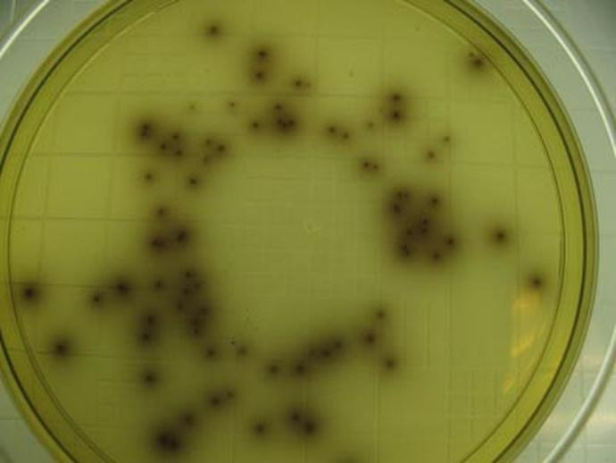

Listeria ou Listeriose
A Listeriose surgiu em 1926, descoberta por Joseph Lister, motivo pelo nome ``Listeria''. Joseph era cirurgião e microbiologista inglês considerado um dos pais da microbiologia, junto com Koch e Pasteur. É descrita como uma bactéria causadora de infecções em humanos, é gram-positiva curto, anaeróbio facultativo, não esporulado, móvel devido aos seus flagelos peritríquios, que se projetam em todas as direções. A primeira epidemia de listeriose em humanos foi em 1929, e esteve associada ao consumo de leite não pasteurizado proveniente de vacas com listeriose (Vela, 1997). Listeria é uma infecção grave que pode acometer pessoas de todas as idades, mas geralmente acomete pessoas com o sistema imune comprometido, gestantes, idosos com mais de 65 anos, crianças, recém-nascidos, pessoas com o sistema imunológico enfraquecido, soropositivas, pessoas que fazem quimioterapia, diabéticos ou que possuem doença renal.
Transmissão
Os animais e as pessoas partilham a mesma fonte de contágio – o ambiente, ou pela ingestão de alimentos contaminados. Porém,
ao contrário de muitos organismos, a Listeria pode se desenvolver em temperaturas frias, mas não sobrevivem a temperaturas elevadas,
ou seja, é preciso ter um cozimento ou pasteurização adequada desses alimentos.
Alimentos com grande chance de contaminação:
- Laticínios contaminados não pasteurizados;
- Verduras e legumes crus;
- Carnes contaminadas;
- Alimentos refrigerados que não requerem cozimento antes do seu consumo;
- Frutos do mar defumado ou congelado;
Diagnóstico
Com o avanço da tecnologia e da medicina o diagnóstico de Listeriose se torna rápido e preciso. O diagnóstico é feito a partir de exame físico, de sangue ou teste de fluido espinhal. Sendo assim, o paciente acometido pela infecção poderá fazer o tratamento o mais rápido possível, na grávida, o tratamento atempado pode prevenir a infecção no feto ou recém-nascido.
Tratamento e Prevenção
O tratamento é feito à base de antibióticos, recomendados pelo médico de acordo com cada caso.
A maneira de prevenirse contra a Listeriose consiste em alguns cuidados como a forma de preparo
e manuseio dos alimentos, sempre cozinhar bem os alimentos, evitar ingerir alimentos crus ou malcozidos
de origem animal, lavar bem as mãos, frutas e vegetais em água corrente, reforce a higiene das mãos após
o manuseio dos alimentos, e mantenha os alimentos corretamente refrigerados.
Problemas na Saúde Pública em SC
Foi feita uma pesquisa em 2009 no município de Joaçaba - Pesquisa de Listeria monocytogenes em sorvetes expresso e de buffet comercializados na cidade de joaçaba, santa catarina – Brasil) onde foram avaliadas 32 amostras de sorvetes, sendo 16 amostras de sorvete expresso e 16 amostras de sorvetes servidos em buffet, em sete sorveterias.
Das sete sorveterias, uma única sorveteria não foi detectado Listeria, a mesma vendia somente sorvete expresso, as outras seis delas foi detectado a presença de Listeria e o sabor de chocolate foi o que mais apresentou a doença, acredita-se pelo fato de ser um sabor mais consumido, com isso vai ser mais manipulado pelos consumidores.
Devido a esse fato e outros, é necessário que a vigilância sanitária redobre a atenção, e os consumidores tenham mais cuidados com o tipo de alimento que consomem, a higienização e o manuseio.